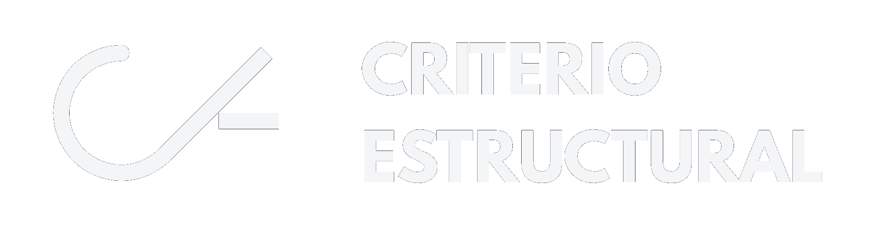

Recursos interactivos y simuladores para ingeniería civil.
Rafael Antonio Correa Melano
Ingeniero Civil • M.Sc. Ingeniería Estructural • Docente UIS
Material interactivo diseñado para fortalecer conceptos en:
Especialista en el diseño, vulnerabilidad y reforzamiento de estructuras. Mi objetivo es cerrar la brecha entre la teoría compleja y la aplicación práctica mediante herramientas digitales que faciliten la comprensión del comportamiento de los elementos que diseñamos.